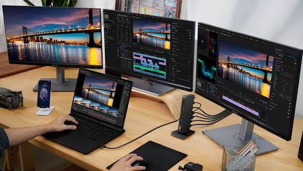
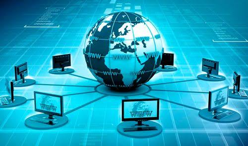
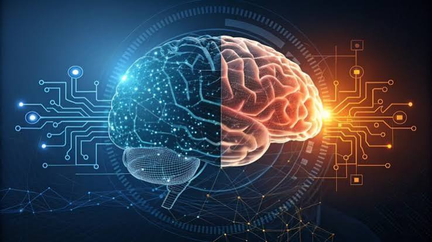
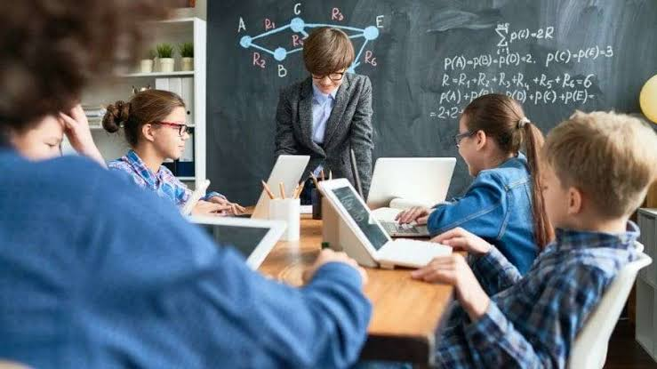
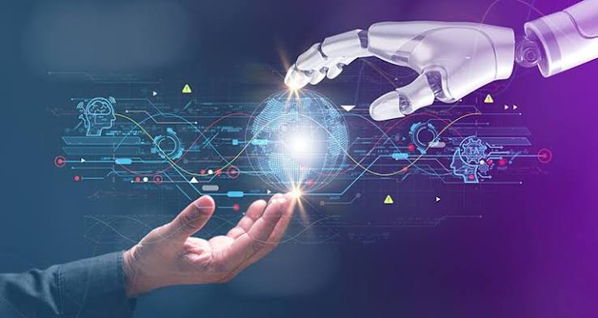

La informática en la actualidad
Actualmente la informática está presente en casi todos los aspectos de nuestra vida. Las computadoras, celulares y otros dispositivos permiten realizar tareas de manera rápida y comunicarnos con personas de todo el mundo.
Computadoras actuales

Las computadoras actuales son mucho más pequeñas y potentes que las primeras computadoras. Pueden realizar millones de operaciones en poco tiempo.
Teléfonos inteligentes
Los teléfonos inteligentes permiten realizar muchas de
las tareas que antes solamente podían hacerse con una
computadora.
También permiten comunicarse, buscar información,
estudiar y utilizar diferentes aplicaciones.
Internet

Internet permite acceder a una enorme cantidad de información y comunicarse con personas que se encuentran en diferentes lugares del mundo.
Inteligencia artificial

La inteligencia artificial es una tecnología que permite
desarrollar sistemas capaces de realizar tareas que
normalmente requieren capacidades humanas.
Actualmente se utiliza en diferentes áreas, como educación,
ciencia, medicina y tecnología.
Informática en la educación

La informática también es muy importante en la educación. Las computadoras e Internet permiten buscar información, realizar trabajos y aprender utilizando diferentes herramientas digitales.
El futuro de la informática

La informática continúa evolucionando. Constantemente se desarrollan nuevas tecnologías y dispositivos que buscan mejorar la forma en que las personas trabajan, estudian y se comunican.